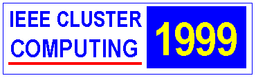
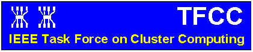
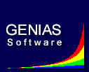
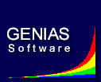

Call
for Papers
(IEEE Task Force First Annual Cluster Computing Meeting/Conference)

IEEE International Workshop on Cluster Computing
Melbourne, Australia, Dec. 2-3, 19999
Sponsored by the IEEE
Computer Society, through the
Task
Force on Cluster Computing (TFCC)

Premier Contributor

Contributors
 

Call For Participation
The availability of high-speed networks
and increasingly powerful commodity microprocessors are making the usage
of clusters, or networks, of computers an appealing vehicle for cost effective
parallel computing. Clusters, built using commodity-of-the-shelf (COTS)
hardware components as well as free, or commonly used, software, are playing
a major role in redefining the concept of supercomputing.
The International Workshop on Cluster
Computing (IWCC'99) is sponsored by the IEEE Computer Society, through the Task Force
on Cluster Computing (TFCC).
IWCC is a first annual international meeting in IEEE sponsored
Cluster Computing technical meeting series and will serve as a forum to present the latest work
by international researchers and developers as well as highlight activities
in this area around Asia Pacific rim. The topics of interest include, but
are not limited to, are:
-
Cluster Hardware (Cluster of PCs, Workstations,
or SMPs)
-
High Performance communication networks
and interfaces
-
Light Weight Communication Protocols
-
Cluster Middleware
-
Single System Image Infrastructure
-
System Availability Infrastructure
-
Issues in Building Scalable Services
-
File Systems and Parallel I/O
-
Job and Resource Management
-
Data Distribution and Load Balancing
-
Programming Paradigms/Environment for Clusters
-
Message Passing Systems such as MPI and
PVM for Clusters
-
Problem Solving Environments for Clusters
-
Tools for Operating and Managing Clusters
-
Java for High Performance Computing
-
Algorithms for Solving Problems on Clusters
-
Scientific, Engineering, and Commercial
Applications on Clusters
The workshop proceedings (containing accepted
papers) will be published by the IEEE Computer Society Press. The proceedings
will also be available on the Web.
See http://www.dcs.port.ac.uk/~mab/tfcc/IWCC99/
or /1999/
for the up-to-date information on the workshop.
Paper Submission
Authors are invited to submit original
unpublished research papers in all areas of cluster computing to the Programme
Chair. All submissions will be reviewed by the program committee members
and external referees. Please ensure that papers does not exceed
ten
(10) single-spaced pages using 10 point size type on A4 pages. The
paper can include figures, tables, references, etc. The paper should
include an abstract of approximately 100 to 150 words. Authors must submit
their papers electronically through the link at http://dhpc.adelaide.edu.au/conferences/IWCC99/
Authors should submit a PostScript (level 2) file and make sure that it
will print on a PostScript printer that uses A4 sized paper. Manuscripts
must be received by on or before the deadline for submission.
General/Organising
Chairs:
Program Chair:
Program Committee:
-
David
Abramson (Monash University, Melbourne, Australia)
-
Hamid
Arabnia (University of Georgia, USA)
-
David
Bader (University of New Mexico, USA)
-
Mark
Baker (Portsmouth University, UK)
-
Ricardo
Bianchini (Federal University of Rio de Janeiro, Brazil)
-
Suchendra
Bhandarkar (University of Georgia, USA)
-
Luc
Bouge (LIP, ENS Lyon, France)
-
Marian
Bubak (Institute of Computer Science, Poland)
-
Rajkumar
Buyya (Monash University, Australia)
-
Giovanni
Chiola (University of Genoa, Italy)
-
Paul
Coddington (University of Adelaide, Australia)
-
Toni
Cortes (Universitat Politecnica de Catalunya, Spain)
-
Dave
DeRoure (University of Southampton, UK)
-
Joao
Gabriel Silva (Coimbra University, Portugal)
-
Al
Geist (Oakridge National Lab. USA)
-
Andrzej
Goscinski (Deakin University, Australia)
-
Wolfgang
Gentzsch (Genias GmbH, Germany)
-
Bill
Gropp (Argonne National Lab., USA)
-
Salim
Hariri (Arizona University, USA)
-
Dan
Hyde (Bucknell University, USA)
-
Yutaka
Ishikawa (Real World Computing Partnership, Japan)
-
Heath
James (University of Adelaide, Australia)
-
Hai
Jin (University of Hong Kong, China)
-
Daniel
S. Katz (Jet Propulsion Lab., California Institute of Technology, USA)
-
Chung-Ta
King (National Tsing Hua University, Taiwan)
-
Kevin
Maciunas (University of Adelaide, Australia)
-
Piyush
Maheshwari (University of New South Wales, Sydney)
-
Chris
McDonald (University of Western Australia, Perth, Australia)
-
John
Morris (University of Western Australia, Perth, Australia)
-
Marcin
Paprzycki (University of Southern Mississippi, USA)
-
Robert
Pennington (NCSA, USA)
-
Ira
Pramanick (Sun Microsystems, USA)
-
Radharamanan
Radhakrishnan (University of Cincinnati, USA)
-
Rajeev
Raje (Purdue University, USA)
-
Mohan
Ram (Centre for Development of Advanced Computing, India)
-
Wolfgang
Rehm (TU Chemnitz, Germany)
-
Paul
Roe (Queensland University of Technology, Brisbane)
-
Harjinder
Sandhu (York University, Toronto, Canada)
-
Danial
Saverese (California Institute of Technology, USA)
-
Hong
Shen (Griffith University, Brisbane, Australia)
-
R.
K. Shyamasundar (Tata Institute of Fundamental Research, India)
-
Tony
Skjellum (MPI Software Technology, USA)
-
Thomas
Sterling (California Institute of Technology, USA)
-
Peter
Strazdins (Australian National University, Canberra)
-
Chengzheng
Sun (Griffith University, Brisbane, Australia)
-
Yong-Meng
Teo ( National University of Singapore, Singapore)
-
Putchong
Uthayopas (Kasetsart University, Bangkok, Thailand)
-
David
W Walker (Cardiff University, UK)
-
Barry
Wilkinson (University of North Carolina, USA)
-
Albert
Zomaya (University of Western Australia, Perth, Australia)
Publications/Proceedings Chair:
Poster Papers Chairs:
Please submit poster title and abstract for consideration (poster
presentation and web-proceedings) to one of the following by email. See poster call for more details.
Local Arrangements Committee:
Publicity Chairs:
Finance Chair:
Registration Co-Chairs:
Conference Venue:
Important Dates:
| Call For Papers |
May 5, 19999 |
| Paper Submission |
August 5, 19999 |
| Notification of Acceptance |
August 25, 19999
|
| Camera Ready Papers and Pre-registration
due on |
Sept. 22, 19999 |
| IWCC'99 Workshop |
December 2-3, 19999 |